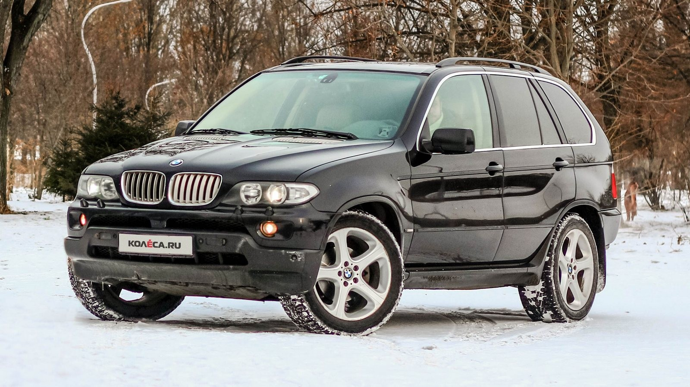
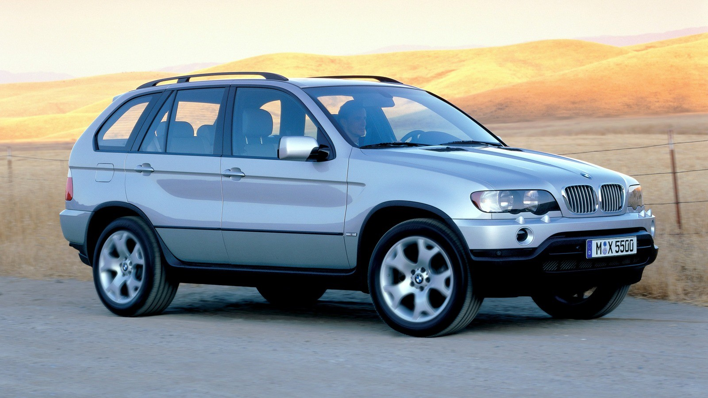
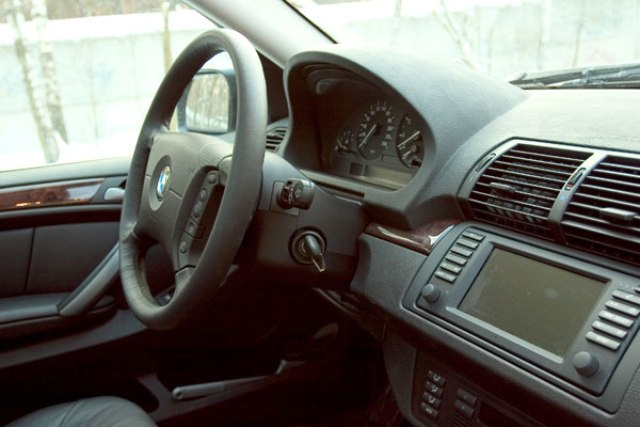
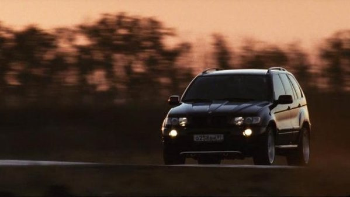
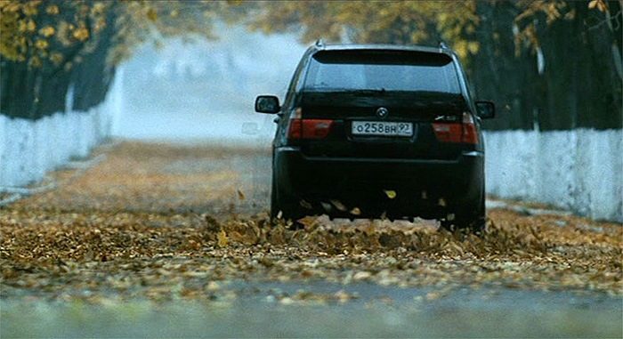
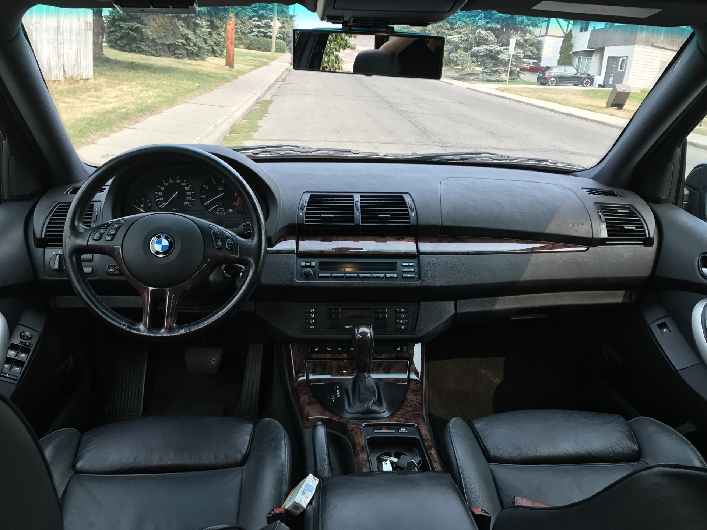

Обзор
BMW X5 E53 получил рестайлинг в 2003 году, который включал изменения:
- Отличия включают в себя изменения в передней части автомобиля, такие как новая решетка, фары, капот и бампер;
- В рестайлинге также устанавливается панорамная крыша, шестиступенчатая коробка передач и более мощный двигатель.
Характеристики
- Двигатель: 3.0 i с мощностью 231 лошадиная сила, 6-цилиндровый.
- Интерьер: Салон выполнен полностью из кожи.
- Электроника: Высококачественные электрические приводы зеркал и сидений, множество подогревов, CD ресивер с высококачественным звуком, хороший климат-контроль, фары из ксенона.
- Внешний вид: Обновленные задние фонари и передние фары, радиаторная решетка и капот.
- Система привода: Новая система полного привода xDrive.
- Скорость: Максимальная скорость модели 4.4i xDrive достигает 240 км/ч, разгон до 100 км/ч за 7 секунд.
Галерея

Передний вид

Боковой вид

Интерьер

Экстерьер

Вид сзади

Салон